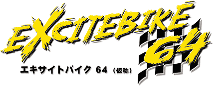
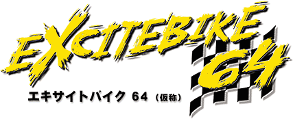
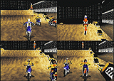
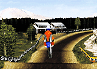
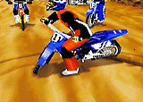
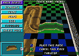

|
 Game developed by Left Field. |
||||
|
|
 Game developed by Left Field. |
||||
|
| 『エキサイトバイク』ってゲームを覚えているだろうか？かつてファミコン用ソフトとして発売された、オートバイのモトクロス競技をベースにしたシンプルなゲームなんだけど、当時としては画期的なコース・エディット機能も付いていたりして大ヒットしたんだ。そんな伝説のソフトが十年以上の沈黙を破り、ロクヨンでカムバック。これはスクープだ！ |
|  | ■コース上に様々な大きさで盛られた土砂の山を、オフロードタイプのバイクで次々と飛び越えていく。4人まで対戦可能。 |
|  | ■前作同様、重要なのは空中から着地までのバランス感覚。3Dスティックのビミョ〜な指さばきがとっても大切なのだ。 |
|  | ■テールを振って、後ろから迫るライバルを引っかけ倒すのもテクニックのひとつ。 |
|  | ■もちろんエディット機能も継続されている。手軽に自分だけのオリジナルレーストラックを作ることができるぞ。 |